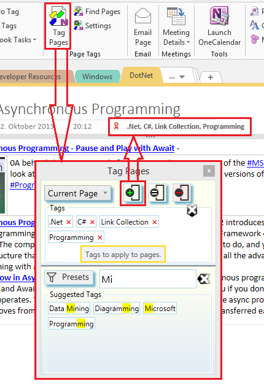

OneNote Tagging Kit Add-In
A free to-use, add-in to add page tagging and advanced search to OneNote for the desktop. The add-in is hosted on GitHub as Open Source project.

Feature Overview
- Unlike the build-in OneNote paragraph tags, Tagging Kit Page Tags mark an entire page. The OneNote Tagging Kit utilizes Page Tags to provide an enhanced search experience which allows to search for pages by Faceted Search combined with full-text queries. Search results can be dynamically refined by adding additional Page Tag or full text conditions to the filter.
- The add-in provides several integrated dialogs to apply, manage, and search with page tags.
- Tagging operations are performed in the background. OneNote can be used normally while tagging is in progress.
- Page Tags are based on OneNote paragraph tags and are automatically shared to all connected OneNote clients. If a OneNote client does not have the Tagging Kit installed, it still has access to the page tags via the built-in OneNote tagging system. If a connected OneNote client has the Tagging Kit add-in, full tagging functionality is available.
Version specific features are covered in the release specific documentation of the add-in.
About Tagging
The Use of Tags briefly outlines the concept behind tags for information management.
Some thoughts about the use of Page Tags to organize notes in OneNote can be found in Organizing Notes with Page Tags.
Getting Started with the OneNote Tagging Kit Add-In
Installation and use of the Tagging Kit can be found in the release specific documentation.

Bugs and Features
You are very much welcome to submit new issues or enhancement requests at Issues. Please avoid duplicates and check if the issue you are going to submit has already been reported or fixed. Also, take a look at the troubleshooting tips in the release specific documentation.
Make sure you always attach the add-in's logfile when submitting bugs.
The easiest way to locate the logfile is to open the Settings dialog and
select the About tab.
Alternatively you can open File Explorer, navigate to the
%TEMP% directory and pick up the newest logfile named taggingkit_*.log.
The * stands for a sequence of characters and numbers, e.g.
taggingkit_8DA0C2A5B55670C.log.
Releases
🌟 v4.0 - Documentation - Installation - [Release Notes]